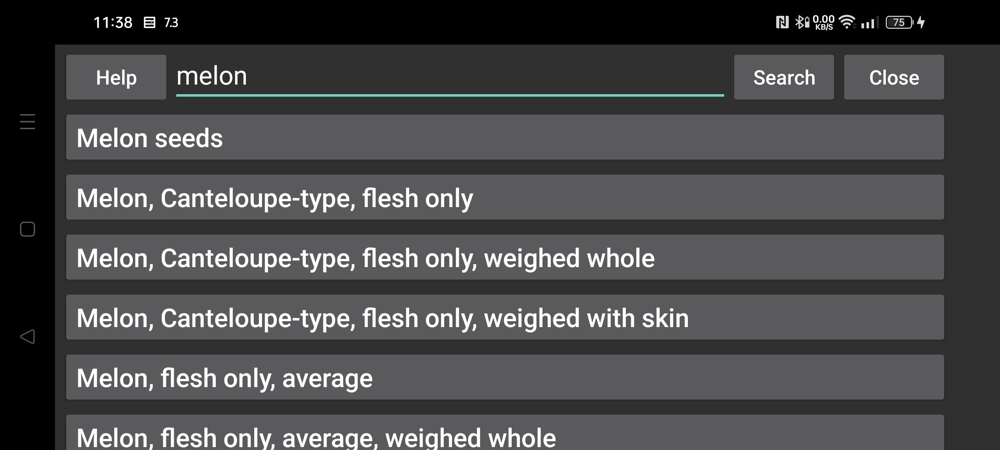

ar be de es fr it nl pl pt ru tr uk zh en
Voedsel samenstelling database
Hier kun je voedsel opzoeken in McCance and Widdowson’s The Composition of Foods Integrated Dataset 2021 https://www.gov.uk/government/publications/composition-of-foods-integrated-dataset-cofid
Je kunt bij het zoeken gebruik maken van regular expressions (https://www.regular-expressions.info/quickstart.html). Je kunt bijvoorbeeld zoeken naar beschrijvingen die beginnen met apple en later het woord raw bevatten, door: ^apple.*\braw\b
Als je geen regex tekentjes gebruikt, wordt er op de normale manier gezocht.